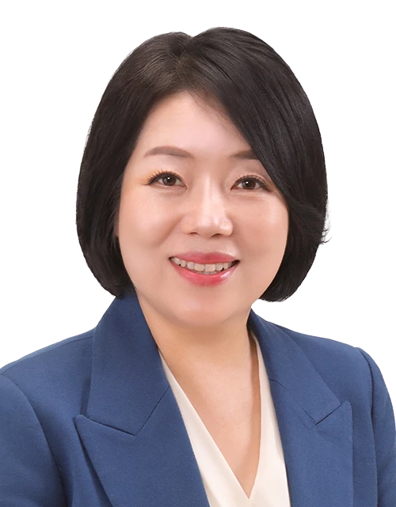

  <main id="main" class="section">
    <div class="section-inner">
      <p class="section-eyebrow">프로필</p>
      <h1 class="section-title">의원 소개</h1>
      <div class="intro-grid">
        
        <div class="intro-bio">
          <p>임미란 의원은 조선대학교에서 디자인을, 홍익대학교와 조선대학교 대학원에서 건축도시와 디자인경영을 공부하고 디자인경영학 박사 학위를 받았습니다. 기업과 여성경제 단체, 대학에서 쌓은 현장 경험을 바탕으로 제8대 광주광역시의회의원에 당선된 뒤 제9대를 거쳐, 2026년 6월 3일 제9회 전국동시지방선거에서 남구 제1선거구 의원으로 다시 당선되었습니다.</p>
          <p>2026년 7월 1일 개원한 전남광주통합특별시의회 제1대 의원으로 보건복지위원회와 예산결산특별위원회에서 활동하고 있습니다.</p>
        </div>
      </div>
      <div class="intro-video" id="introVideo" hidden></div>
      <dl class="profile-list" style="margin-top:32px;">
        <div><dt>현직</dt><dd>전남광주통합특별시의회의원 (제1대) · 남구 제1선거구</dd></div>
        <div><dt>상임위원회</dt><dd>보건복지위원회 위원</dd></div>
        <div><dt>특별위원회</dt><dd>전남광주통합특별시청 예산결산특별위원회 위원</dd></div>
        <div><dt>당선</dt><dd>2026년 6월 3일 제9회 전국동시지방선거 · 남구 제1선거구(3인 선거구)</dd></div>
        <div><dt>소속 정당</dt><dd>더불어민주당</dd></div>
        <div><dt>출생</dt><dd>1965년 8월 6일</dd></div>
        <div><dt>학력</dt><dd>해남여자고등학교 · 조선대학교 산업디자인학과 · 홍익대학교 건축도시디자인대학원(석사) · 조선대학교 대학원 디자인경영학과(박사) · 조선대학교 대학원 AI과학정책융합학과 박사과정</dd></div>
        <div><dt>주요 경력</dt><dd>제8·9대 광주광역시의회의원 · 더불어민주당 광주광역시당 여성위원장</dd></div>
        <div><dt>의원실</dt><dd><a href="tel:062-613-5133">062-613-5133</a> · <a href="mailto:miran2640@naver.com" data-contact-email>miran2640@naver.com</a></dd></div>
      </dl>
      <p class="source-note">자료 출처: 전남광주통합특별시의회·광주광역시의회 공식 페이지, 중앙선거관리위원회 공개 자료 (2026-11-05 확인)</p>
    </div>
  </main>
  <!-- @tail -->

